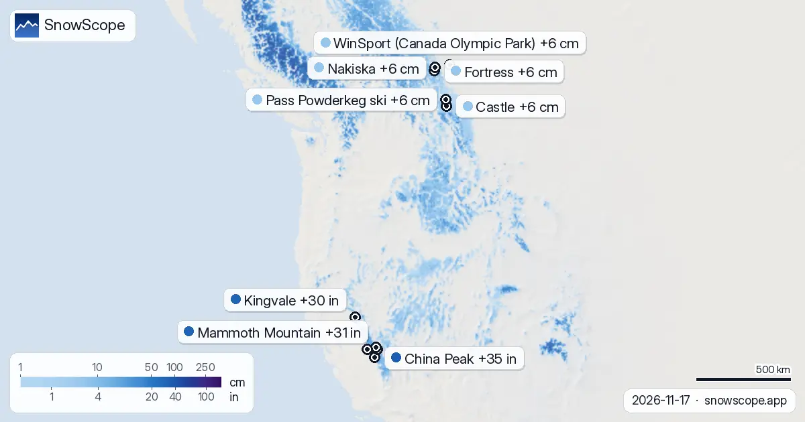

+102 cm a Orelle: la tabella delle previsioni neve a 72 ore (17 novembre)
La classifica del giorno: più neve fresca prevista nelle prossime 24 ore e fino al 20 novembre, in Europa, Marocco e Nord America, quota neve inclusa. La tabella ordina previsioni, non certezze: i primi posti di solito sono giusti, le quantità esatte meno.
Le previsioni neve in tempo reale per Orelle nell'app SnowScopeAltezza neve, allerte powder e mappa 3D, gratis.
Europa e Marocco
Orelle (Francia): 102 cm entro 72 ore (22 cm nelle prossime 24 ore), quota neve circa 2.500 m. Courmayeur (Italia): prossime 24 ore 28 cm, 72 ore 100 cm, quota neve vicino a 2.000 m. Balme (Francia / Svizzera): 99 cm entro 72 ore (20 cm nelle prossime 24 ore), quota neve circa 2.000 m.
| # | Località | Regione | +24 h | +72 h | Quota neve |
|---|---|---|---|---|---|
| 1 | Orelle | Alpi · Francia | 22 cm | 102 cm | 2.500 m |
| 2 | Courmayeur | Alpi · Italia | 28 cm | 100 cm | 2.000 m |
| 3 | Balme | Alpi · Francia / Svizzera | 20 cm | 99 cm | 2.000 m |
| 4 | Valmorel | Alpi · Francia | 18 cm | 97 cm | 2.100 m |
| 5 | Les Houches | Alpi · Francia | 25 cm | 96 cm | 2.000 m |
| 6 | Arêches Beaufort | Alpi · Francia | 23 cm | 96 cm | 2.100 m |
| 7 | Evasion Mont Blanc | Alpi · Francia | 23 cm | 93 cm | 2.100 m |
| 8 | Les Arcs | Alpi · Francia | 22 cm | 92 cm | 2.100 m |
| # | Località | Regione | +24 h | +72 h | Quota neve |
|---|---|---|---|---|---|
| 1 | China Peak | Ovest degli USA · Stati Uniti | 3 in (7 cm) | 35 in (88 cm) | 6.600 ft (2.000 m) |
| 2 | Mammoth Mountain | Ovest degli USA · Stati Uniti | 4 in (9 cm) | 31 in (80 cm) | 6.600 ft (2.000 m) |
| 3 | June Mountain | Ovest degli USA · Stati Uniti | 4 in (10 cm) | 31 in (78 cm) | 6.900 ft (2.100 m) |
| 4 | Kingvale | Ovest degli USA · Stati Uniti | 8 in (21 cm) | 30 in (77 cm) | – |
| 5 | Badger Pass | Ovest degli USA · Stati Uniti | 5 in (12 cm) | 30 in (77 cm) | 5.900 ft (1.800 m) |
| 6 | Boreal | Ovest degli USA · Stati Uniti | 8 in (20 cm) | 30 in (75 cm) | 5.200 ft (1.600 m) |
| 7 | Kirkwood | Ovest degli USA · Stati Uniti | 7 in (19 cm) | 30 in (75 cm) | 6.200 ft (1.900 m) |
| 8 | Palisades Tahoe Alpine Meadows | Ovest degli USA · Stati Uniti | 7 in (19 cm) | 29 in (73 cm) | 5.200 ft (1.600 m) |
| # | Località | Regione | +24 h | +72 h | Quota neve |
|---|---|---|---|---|---|
| 1 | Fortress | Canada occidentale · Canada | 6 cm | 6 cm | 1.400 m |
| 2 | Nakiska | Canada occidentale · Canada | 6 cm | 6 cm | 1.500 m |
| 3 | WinSport (Canada Olympic Park) | Canada occidentale · Canada | 6 cm | 6 cm | 800 m |
| 4 | Castle | Canada occidentale · Canada | 5 cm | 6 cm | 1.200 m |
| 5 | Pass Powderkeg ski | Canada occidentale · Canada | 5 cm | 6 cm | 1.100 m |
| 6 | Banff Sunshine Village | Canada occidentale · Canada | 4 cm | 4 cm | 1.400 m |
| 7 | Mt Norquay | Canada occidentale · Canada | 4 cm | 4 cm | 1.400 m |
| 8 | Wapiti | Canada occidentale · Canada | 3 cm | 4 cm | 1.400 m |

Stati Uniti
China Peak (Stati Uniti): prossime 24 ore 3 in (7 cm), 72 ore 35 in (88 cm), quota neve vicino a 6.600 ft (2.000 m). Mammoth Mountain (Stati Uniti): 31 in (80 cm) entro 72 ore (4 in (9 cm) nelle prossime 24 ore), quota neve circa 6.600 ft (2.000 m). June Mountain (Stati Uniti): prossime 24 ore 4 in (10 cm), 72 ore 31 in (78 cm), quota neve vicino a 6.900 ft (2.100 m).
Canada
Fortress (Canada): 6 cm entro 72 ore (6 cm nelle prossime 24 ore), quota neve circa 1.400 m. Nakiska (Canada): prossime 24 ore 6 cm, 72 ore 6 cm, quota neve vicino a 1.500 m. WinSport (Canada Olympic Park) (Canada): 6 cm entro 72 ore (6 cm nelle prossime 24 ore), quota neve circa 800 m.
In arrivo
La quota neve nella tabella è lo zero termico previsto meno circa 300 m; si sposta, quindi usala come indicazione.
Modello per le località, strumenti per le stazioni: il primo è una stima per i pendii superiori, il secondo un punto alla data indicata.
Le previsioni a qualche giorno possono cambiare: ricontrolla la mappa il giorno prima di partire.
Consigli per sciatori
- La neve fresca cambia in fretta quando il sole la scalda: si assesta, si bagna e perde leggerezza. La mattina è il momento giusto.
- Aria mite sopra la località vuol dire pappa più in basso. Sali in alto e organizza la giornata sugli impianti di vetta.
- Prima del fuoripista o dello scialpinismo leggi il bollettino valanghe ufficiale (link qui sotto).
- Neve sulla mappa non significa località aperta: controlla impianti e date di apertura sul sito della località.
- Attiva un avviso powder nell'app SnowScope per sapere quando Orelle riceve neve fresca.
Su questi numeri
Le altezze neve delle località sono la neve più alta sui pendii superiori secondo il modello neve di SnowScope (circa 1 km, calcolo del 16 novembre); sono stime per un'area, non una misura in un punto. I valori delle stazioni sono misure alla data indicata. Le previsioni possono cambiare. Leggi sempre il bollettino valanghe ufficiale prima del fuoripista.
Bollettini valanghe ufficiali: EAWS (Europe) · avalanche.org (US) · Avalanche Canada
Cita questo articolo
Per ricerca, didattica o stampa: numeri e grafici sono liberamente riutilizzabili con licenza CC BY 4.0 citando così.
SnowScope (2026), +102 cm a Orelle: la tabella delle previsioni neve a 72 ore (17 novembre), https://snowscope.app/blog/it/2026/11/where-most-snow-falls-next-72-hours-17-november-2026.html, consultato il 2026-11-17
SnowScope (Atlas Labs). (2026, November 17). +102 cm a Orelle: la tabella delle previsioni neve a 72 ore (17 novembre). SnowScope snow reports. https://snowscope.app/blog/it/2026/11/where-most-snow-falls-next-72-hours-17-november-2026.html
BibTeX
@misc{snowscope2026wheremostsnowfallsnext72,
author = {{SnowScope (Atlas Labs)}},
title = {+102 cm a Orelle: la tabella delle previsioni neve a 72 ore (17 novembre)},
year = {2026},
month = nov,
howpublished = {\url{https://snowscope.app/blog/it/2026/11/where-most-snow-falls-next-72-hours-17-november-2026.html}},
note = {Published 2026-11-17 08:17 UTC; accessed 2026-11-17}
}· CC BY 4.0 · Metodi, dati e strumenti →
Orelle: neve e temperatura per quota, quest'inverno vs lo scorso (strumenti) →
Segui Orelle
Gratis: un messaggio quando arriva la neve e il meteo ogni mattina.